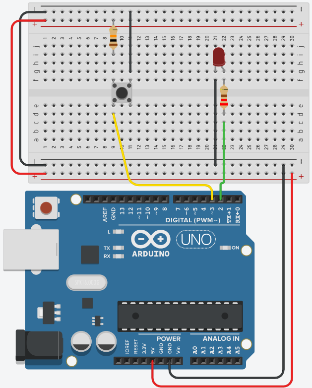

Met digitalRead() en digitalWrite() kan je de digitale ingangen en uitgangen van de Arduino bedienen:
digitalWrite(pin, waarde) zet een pin hoog (HIGH) of laag (LOW), bijvoorbeeld om een led aan of uit te zetten.digitalRead(pin) leest de toestand van een digitale pin, bijvoorbeeld of een knop is ingedrukt (HIGH) of niet (LOW).const int pinLed = 2;
const int pinButton = 3;
void setup()
{
pinMode(pinLed, OUTPUT); // LED als uitgang
pinMode(pinButton, INPUT); // knop als ingang
}
void loop()
{
int knopStatus = digitalRead(pinButton); // lees de knop
if (knopStatus == HIGH)
{
digitalWrite(pinLed, HIGH); // LED aan als knop ingedrukt
}
else
{
digitalWrite(pinLed, LOW); // LED uit als knop niet ingedrukt
}
}pinLed en pinButton zijn globale constanten, zodat het pinnummer overal hetzelfde is.setup() worden de pinnen ingesteld.loop() leest de Arduino continu de knop en schakelt de led aan of uit.